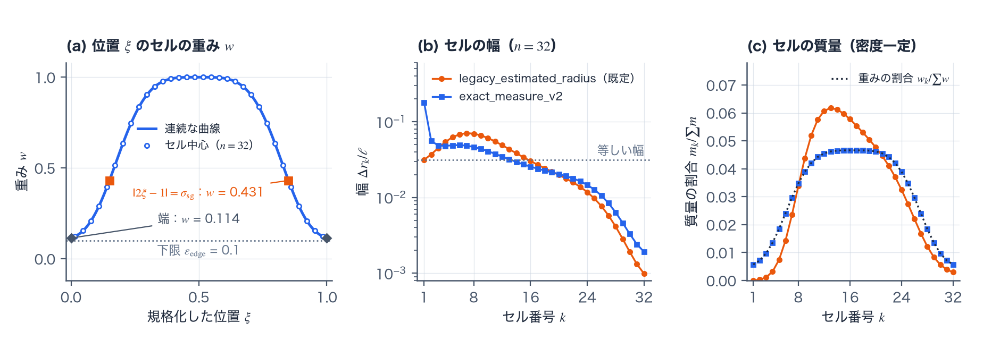
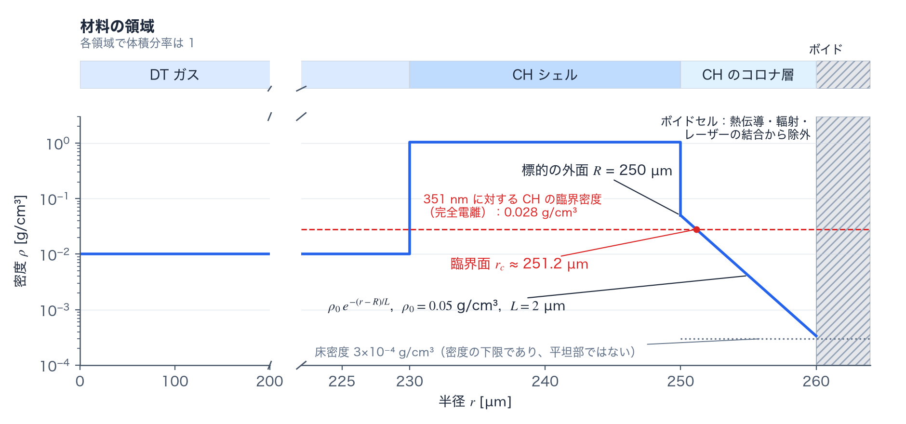

1D メッシュ: 格子と領域 reference
TENRYU の 1D の計算領域は、半径方向の節点（node）列で表す。節点は、等しい幅で並べる一様な配置か、区間（segment）ごとにセルの細かさを変える傾斜配置（graded zoning）で置く。座標は球・円筒・平面から選び、この選択が、同じ節点列に対する面積と体積の与え方、すなわち測度（measure）を決める。材料の分布は、デッキ（deck）の関数 Geometry.volfrac が、セルごとの体積分率（volume fraction）として与える。格子の外側には、ボイド（void）セルと、前駆プラズマ（pre-plasma）に当たる低密度のコロナ層（corona ramp）を置ける。この計算に固有の用語は用語の節で説明する。
物理機構
ラグランジュ法（Lagrangian）の 1D 爆縮では、格子そのものが誤差の内訳の一部になる。各セルが質量を保ち続けるため、初期のゾーニングが全時刻の解像度分布を決める。アブレータの表面や、燃料とシェルの界面へ質量を配置すれば、最大圧縮時に急な勾配が現れる場所へ解像度が配置される。傾斜配置のゾーニングはそこへセルを配分する（区間と傾斜配置）。スーパーガウス型（super-Gaussian）の重み（weight）は、区間の中央から端へ滑らかかつ単調に下がる（重みとそのパラメータ）。セルの質量をこの重みに比例させるので（比例の程度は写像（mapping）で異なる。写像と測度）、セル幅は区間の中で滑らかに変わる。セル幅が急に跳ぶと、音波や衝撃波の信号を数値的に反射してしまうためである。
球・円筒・平面の違いは、おもに測度として入る。同じ節点列を、それぞれに対応する面の面積 \(A(r)\) と殻の体積 \(V(r_0,r_1)\) で解釈する（式は次節）。例外は exact_measure_v2 の写像で、測度に応じて節点の位置も変わる。半径の大きな場所にある薄い球殻では、ほぼ等しい 3 乗の値を直接引くと破滅的な桁落ち（catastrophic cancellation）が起きるため、因数分解した殻体積の式を使う。
材料の領域（region）は体積分率で指定するので、材料の配置を格子の構築から独立に定義できる（領域と体積分率）。ボイドセルは、cell_is_void のマスクで識別し、電子熱伝導、輻射、レーザーとの結合から除外する。ボイドセルの初期の密度と温度は Materials.void_config で与える（ボイドセル）。真空を通常の極低密度の材料として扱うと、代わりに巨大な熱拡散率（thermal diffusivity）が生じてしまう。また、レーザーで冷たい固体を加熱するには、固体の表面の外側にコロナが要る。コロナの置き方は 2 つある。初期の流体の分布に置くコロナ層と、レーザー格子（laser mesh）だけに置くゴーストコロナ（ghost corona、キー Laser.lasermesh.ghost_corona）である。この頁が扱うのはコロナ層である（両者の違いはコロナ層とゴーストコロナの違い）。コロナ層はボイドセルまで狭義単調（strictly monotonic）に減少させる。平坦な部分があると、レーザーを当てたときに数値不安定が成長した記録がある（後述のコロナ層の節）。
- 重みのパラメータ: \(\epsilon_{\rm edge}\)（
Mesh.grid.grading.edge_ratio）、\(\sigma_{\rm sg}\)（grading.sg_sigma）、\(m_{\rm sg}\)（grading.sg_order）の 3 つが、区間の中の重みの形を決める。定義と既定値は重みとそのパラメータに述べる。 - 写像: 重みから節点の位置を決める手順を
grading.mappingで選ぶ。既定はlegacy_estimated_radiusで、exact_measure_v2を選ぶと、密度が一定のとき、重みに従うのはセルの幅ではなくセルの質量になる（写像と測度）。 - 生成時の検査: すべての幅が有限かつ正であること、各区間の幅の和が区間の長さに一致すること、組み立てた節点が狭義単調に増加することを検査し、最後の節点を指定した外端に固定する。
1D の座標幾何とゾーニング
Mesh.geometry_1d は、同じ節点列 \(r_j\) を異なる座標の測度で解釈する。球対称、軸長を 1 とした円筒、断面積を 1 とした平面に対して、面積とセル体積はそれぞれ
ここで \(r\) は半径、\(r_0\) と \(r_1\) は殻の内側と外側の半径である。節点 \(j=0,\ldots,N\) はセル境界の位置と速度をもち、セル \(i=0,\ldots,N-1\) は半径 \(r_i\) から \(r_{i+1}\) までの範囲の密度、内部エネルギー、温度、圧力などをもつ。球殻の薄いセルでは 3 乗の差による桁落ちを避けるため、実装は必要な箇所で因数分解した体積の式を使う。球面の既定経路は従来の演算順序を保ち、別の幾何を選んでも内部の単位系は cgs のままである。
Mesh.grid="uniform" は、Mesh.r_min から Mesh.r_max までを、等しい幅の Mesh.nr 個のセルに分ける。Mesh.grid に type="graded" を与えると、連続する半径方向の区間の列と、区間ごとのセル数を受け取る（区間と傾斜配置）。区間のセル数を \(n_s\)、区間の中のセルの番号を \(k=0,\ldots,n_s-1\) として、規格化したセル中心 \(\xi_k=(k+1/2)/n_s\) に対するスーパーガウス型の重み
を作る。\(\epsilon_{\rm edge}\)、\(\sigma_{\rm sg}\)、\(m_{\rm sg}\) は重みの形を決める 3 つのパラメータである（重みとそのパラメータ）。この重みから、写像がセルの幅を決める（写像と測度）。区間の長さは厳密に保存し、隣り合う区間の境界における幅は幾何平均を目標にそろえる。明示的に有効化する exact_measure_v2 の写像は、累積した重みを球・円筒・平面それぞれの厳密な殻の測度で反転し、密度が一定の区間ではセルの質量を重みに対応させる。生成後は、すべての幅が有限で正であること、各区間の幅の和が区間の長さに一致すること、節点列が狭義単調であることを検査し、最後の節点を指定した外端に固定する。
この計算で使う用語
1D の格子は、区間、重み、写像という単位で作る。材料の分布は、領域、ボイドセル、コロナ層で与える。これらは TENRYU の実装に固有の意味で使うので、まとめて定義する。
区間と傾斜配置
区間（segment）は、傾斜配置の格子を作る単位となる、半径方向の範囲である。Mesh.grid の segments に、{"r_start": …, "r_end": …, "nr": …} の形で並べる。内端の半径を \(r_{\rm start}\)、外端の半径を \(r_{\rm end}\)、セル数を \(n_s\)（nr）とする。区間は隣り合う区間と端を共有して並び、節点列は先頭の区間の r_start から最後の区間の r_end までになる。区間のセル数の和が全セル数で、Mesh.nr と食い違うときは、警告を出して和を使う。全セル数は 4 以上でなければならない。r_end が r_start 以下の区間、セル数が 1 未満の区間、端が一致しない区間の列は、誤りとして拒否する。デッキ生成 GUI の TENRYU Studio（以下 Studio）の初期値は、区間なしの一様な格子で、Mesh.nr は 300 である。
傾斜配置（graded zoning）は、区間ごとに重み（次項）に応じてセルの大きさを変え、区間の端に細かいセルを集める配置である。端を材料の界面や標的の表面に合わせると、最大圧縮時に急な勾配が現れる場所に解像度が置かれる。密度が一定のとき、セルの質量は重みに比例し（比例の程度は写像で異なる）、端のセルの質量は中央のセルより小さい。区間を指定しないときは、Mesh.r_min から Mesh.r_max までを 1 つの区間として、等しい幅の Mesh.nr 個のセルに分ける（Mesh.grid="uniform" と同じである）。等しい幅のセルは、球と円筒の測度では、外側のセルほど体積と質量が大きい。
隣り合う区間の境界では、セル幅を連続にするため、左の区間の最後のセルの幅と右の区間の最初のセルの幅の幾何平均を、両側の幅の目標にする。各区間は、端のセルの幅をこの目標に置き換え、残りのセルを共通の倍率で拡大・縮小して、区間の長さを保つ。区間のセル数が少なく、両端の目標幅と区間の長さを同時に満たせないときは、生成が assert で異常終了する。
重みとそのパラメータ
重み（weight）\(w_k\) は、区間の中のセル \(k\) に配分する質量の相対値である（式は1D の座標幾何とゾーニング）。区間の中央でほぼ 1 になり、端に向かって下がり、端（\(|2\xi_k-1|\to1\)）では \(\epsilon_{\rm edge}+(1-\epsilon_{\rm edge})\exp[-(1/\sigma_{\rm sg})^{m_{\rm sg}}]\) になる（既定値で 0.114）。exact_measure_v2 の写像では、密度が一定のとき、セル \(k\) の質量が区間の質量の \(w_k/\sum_lw_l\) になる。既定の写像では、この比例が近似になる。重みの形は、Mesh.grid.grading の 3 つのパラメータで決まる。指定しなければ既定値を使い、Studio も同じ値を書き出す。
- \(\epsilon_{\rm edge}\)（
edge_ratio、既定 0.1、0 より大きく 1 より小さい）は、重みの下限である。端のセルの質量は、中央のセルの質量の \(\epsilon_{\rm edge}\) 倍より少し大きい。1 に近づけると、重みは区間の全体で一様になる。 - \(\sigma_{\rm sg}\)（
sg_sigma、既定 0.7、0 より大きく 1 より小さい）は、中央から端への下がり始めの位置を決める。中央からの規格化した距離 \(|2\xi_k-1|\) が \(\sigma_{\rm sg}\) に達する位置で、重みは \(\epsilon_{\rm edge}+(1-\epsilon_{\rm edge})/e\)（既定値で 0.431）になる。 - \(m_{\rm sg}\)（
sg_order、既定 4、2 以上の偶数）は、その下がり方の鋭さを決める。大きいほど、中央は平らで、\(\sigma_{\rm sg}\) の近くで急に下がる。
3 つのパラメータが決めるのは、区間の中のセルの質量の配分だけである。区間の長さ、セル数、区間の境界の位置は変わらない。既定値での重みの曲線は図A(a) に示す。
写像と測度
測度（measure）は、座標が決める面積と体積の与え方である（式は1D の座標幾何とゾーニング）。半径 \(r\) の内側の体積は \(r^d\) に比例し、\(d\) は球で 3、円筒で 2、平面で 1 である。座標は Mesh.geometry_1d（既定 "spherical"）で選ぶ。
写像（mapping）は、区間の重み \(w_k\) から節点の半径を決める手順で、Mesh.grid.grading.mapping で選ぶ。2 つある。
"legacy_estimated_radius"（既定）は、球の測度を仮定して、セル \(k\) の幅を \(\Delta r_k\propto w_k/(r_{{\rm est},k}^2+r_{\rm ref}^2)\) とし、区間の長さ \(\ell=r_{\rm end}-r_{\rm start}\) に合うよう規格化する。\(r_{{\rm est},k}=r_{\rm start}+\ell\xi_k\) は、等間隔に置いたセル中心の仮の半径で、最終的なセル中心とは一致しない。\(r_{\rm ref}=\ell/\sqrt{n_s}\) は、原点から始まる区間（\(r_{\rm start}<10^{-12}\) cm）で \(1/r^2\) の発散を抑える項で、そのほかの区間では 0 である。\(\epsilon_{\rm edge}\) が 1 に十分近い（\(1-\epsilon_{\rm edge}\le10^{-12}\)）ときは、等しい幅のセルを返す。球の測度の仮定は、Mesh.geometry_1dが円筒や平面でも変わらない。仮の半径を使うので、密度が一定のときのセルの質量は、重みに比例する値から外れる。外れは、原点から遠い薄い殻では小さく（既定の重み、区間 0.023〜0.025 cm、セル数 60 の例で、質量と重みの比がセルの間で 4 % 以内にそろう）、原点から始まる区間では大きく、内側のセルほど小さくなる（既定の重み、区間 0〜1、セル数 32 の例で、最も内側のセルの質量は、中央のセルを基準にして、重みに比例する値の 0.5 % である）。"exact_measure_v2"（任意）は、重みの累積分率 \(W_k=\sum_{l\le k}w_l/\sum_lw_l\) を、測度の厳密な逆写像（inverse mapping）で節点の半径に変える。\(r_{k+1}^d=r_{\rm start}^d+W_k\,(r_{\rm end}^d-r_{\rm start}^d)\) で、\(d\) はMesh.geometry_1dで決まる。密度が一定の区間では、セルの質量が丸め誤差の範囲で重みに比例し、原点から始まる区間でも同じである。\(\epsilon_{\rm edge}\to1\) の極限は、等しい質量のセルで、既定の写像の等しい幅とは異なる。1D 専用で、2D_RZ で指定すると誤りになる。Studio はmappingを書き出さないので、Studio のデッキは既定の写像になる。
原点から始まる区間で、2 つの写像が作るセルの幅と質量を図A(b)(c) に比べる。どちらの写像でも、区間の境界の幅の補正（区間と傾斜配置）が最後に掛かる。exact_measure_v2 でも、複数の区間をもつデッキでは境界の近くで、質量が重みに比例する関係が少し崩れる。

legacy_estimated_radius、青の四角は exact_measure_v2、(b) の点線は等しい幅、(c) の点線は重みの割合 \(w_k/\sum w\) である。exact_measure_v2 の質量は点線に重なる。legacy_estimated_radius の最も内側のセルの質量は、重みに比例する値の約 0.5 % しかない。薄い殻（0.023〜0.025 cm、\(n=60\)）では legacy_estimated_radius の質量と重みの比がセルの間で 4 % 以内（計算値 0.981〜1.017）にそろうので、図には描いていない。計算は、build_graded_nodes の式を 1 つの区間（隣の区間なし）に適用した。領域と体積分率
領域（region）は、Studio で材料を置く単位で、半径方向に内側から外側へ積み重ねる層 1 枚である。外半径 rOuter、材料、密度、電子温度、イオン温度の組で与える。rOuter は内側から狭義単調に増える。Studio は、最後の領域の外半径が Mesh.r_max に一致すること（外側のボイドを使うときは Mesh.r_max より小さいこと）を要求する。
ソルバーは領域の表を読まず、デッキの関数を読む。Geometry.volfrac は材料ごとの体積分率（0 から 1 の無次元量）、Geometry.rho は密度、Geometry.Te と Geometry.Ti は電子とイオンの温度を、半径の関数として返す。Studio は、領域の表から、半径に対して区分的に一定（piecewise constant）な値を返すこれらの関数を書き出す。ソルバーは、関数をセルの中点の半径 \((r_i+r_{i+1})/2\) の 1 点で評価する。1D のセルは、関数が 0 と 1 の間の値を返さない限り、1 つの材料からなる。材料の体積分率の和が 1 を超えるセルは誤りである。和が 1 に満たないセルは、Geometry.enforce_sum_to_one（既定 True）のとき和が 1 になるよう規格化する（和が 0 のセルは誤りである）。False のときは規格化せず、足りない分をボイドとみなして、密度に和を掛ける。初期のセル質量は、評価した密度とセルの体積の積である。
ボイドセル
ボイドセル（void cell）は、ボイド材料（Material(..., is_void=True)）だけからなるセルである。ボイド材料でない材料の体積分率の和が \(10^{-12}\) 以下のセルがこれに当たり、cell_is_void のマスクで識別する。ボイドセルは、電子熱伝導、輻射、レーザーとの結合から除外する（定義と扱いはボイド材料）。ボイドセルの初期の密度と温度は、デッキの Geometry.rho、Te、Ti の値ではなく、Materials.void_config から取る。既定は \(\rho=10^{-10}\,\mathrm{g\,cm^{-3}}\)、\(T_e=T_i=10^{-3}\) eV で、Studio も同じ値を書き出す。
ボイドセルは力を受けないので、連続する 2 セル以上のボイドセルの節点は、自分では動かない。1D の流体の更新は、各ステップで、この連なりの両端の節点（物質の表面、または計算領域の境界にある節点）の間に、内側の節点を等間隔に置き直し、その速度を 0 にして、セルの質量を Materials.void_config の密度と体積の積に保つ。これらのセルは物理から除外されているので、実在のセルの保存量には影響しない。
Studio では、「最終領域の外側を真空 (VOID) にする」（内部名 vacuumOutside1d、既定は無効）を有効にすると、最後の領域（コロナ層があればその外端）から Mesh.r_max までを、名前 VOID のボイド材料で埋める。名前 VOID は Studio が使う予約名で、外側の真空を有効にしたとき、同じ名前のユーザー材料は誤りになる。
コロナ層
コロナ層（corona ramp）は、標的の外面 \(R\)（最後の領域の外半径）から外側へ、密度が指数関数的に下がる層で、初期の密度の分布として置く。層のセルは、最後の領域と同じ材料と温度をもつ流体のセルで、質量をもち、ほかのセルとともに動く。冷たい固体の表面の外にコロナがないと、レーザーはほとんど吸収される前に反射される（理由は次節）。層の密度は
$$ \rho(r)=\max\bigl\{\rho_0\exp[-(r-R)/L],\ \rho_{\min}\bigr\},\qquad R\le r\le R_{\rm corona} $$である。ここで \(r\) は半径、\(\rho_0\) は外面での密度、\(L\) は指数スケール長（exponential scale length。密度が \(1/e\) になる距離）、\(\rho_{\min}\) は床密度（floor density）、\(R_{\rm corona}\) は層の外端である。Studio では、フォームの「プリプラズマ・コロナ ramp」（内部名 coronaRamp1d、既定は無効）で、次の 4 つの入力欄から指定する。有効にしたときの初期値は、GXII（激光 XII 号、GEKKO XII）の回帰試験（regression test）のデッキと同じ値である。
| 記号 | Studio の入力欄（内部名） | 初期値 | 意味 |
|---|---|---|---|
| \(\rho_0\) | 「ramp 開始密度」（rho0） | 0.05 g cm⁻³ | 外面 \(R\) での密度 |
| \(L\) | 「ramp スケール長 L」（scaleUm） | 2.0 µm | 指数スケール長 |
| \(R_{\rm corona}-R\) | 「ramp 域の長さ」（extentUm） | 10.0 µm | 層の厚さ |
| \(\rho_{\min}\) | 「ramp 床密度」（rhoMin） | 3×10⁻⁴ g cm⁻³ | 層の密度の下限 |
コロナ層は、外側のボイドが有効なときだけ使える。層の外端が Mesh.r_max を超えてはならず、rhoMin は rho0 より小さくなければならない。ソルバーにコロナ層のキーはなく、Studio がデッキの密度と体積分率の関数へ式を書き出す。床密度は、層の密度の下限として、デッキの関数の中に置く値である。ソルバーが状態に課す床（床・クランプ・安全ガード）とは別である。\(\rho_0\exp[-(r-R)/L]\) が \(\rho_{\min}\) を下回る位置から外側では、密度が \(\rho_{\min}\) で一様な平坦部になる。層が外端まで狭義単調に減少する条件は \(\rho_0\exp[-(R_{\rm corona}-R)/L]>\rho_{\min}\) で、既定値では \(3.37\times10^{-4}\,\mathrm{g\,cm^{-3}}\) が \(3\times10^{-4}\,\mathrm{g\,cm^{-3}}\) を上回って満たされる。Studio はこの条件を検査しない。
コロナ層とゴーストコロナの違い
ゴーストコロナ（ghost corona）は、コロナ層とは別のものである。レーザーの光線追跡（ray tracing）のためだけに、レーザー格子の最外の物質セルの外側へ置く仮想のコロナで、流体の密度、温度、質量には入らない（1D 専用）。レーザー格子は、光線追跡のために流体の格子とは別に作る半径方向の格子で、臨界面（critical surface）の近くを細かくする（レーザー参照）。ゴーストコロナで吸収されたパワーは、最外の物質セルから内向きの数セルへ再配分される（リポジトリの docs/NUMERICS.md §5.7.5）。キーは Laser.lasermesh.ghost_corona で、既定は無効である。Studio はこの機能を「合成コロナ (ghost corona)」と表示する。どちらも、冷たい固体の表面の外にコロナがないという、同じ問題を解く。
| 項目 | コロナ層（corona ramp） | ゴーストコロナ（ghost corona） |
|---|---|---|
| 置く場所 | 初期の流体のメッシュ（最後の領域とボイドの間） | レーザー格子だけ（最外の物質セルの外側） |
| 流体への影響 | 質量をもつセルとして流体に入り、流体とともに動く | 流体の密度、温度、質量には入らない |
| 設定 | デッキの Geometry.rho と Geometry.volfrac（Studio は coronaRamp1d） | Laser.lasermesh.ghost_corona（1D 専用） |
| 既定 | Studio で無効。ソルバーにキーはない | ソルバーと Studio で無効 |
| Studio のプリセット | 使わない | レーザーで駆動するプリセットが使う |
材料の領域、ボイド、コロナ層
標的は、中心のガス、固体のシェル、外層のような、同心の材料の領域として与える。ソルバーは領域の関数をセルの中点の半径で評価するので、領域の境界がセルの内側にあると、そのセルの材料は中点の位置で決まり、界面はセル 1 個の精度で表される。界面を節点に合わせるには、傾斜配置の区間の端を領域の境界に置く（領域と体積分率）。
外側の真空を単なる極低密度の通常材料にすると、レーザーで加熱したあとの低密度のセルに、熱伝導と輻射の係数が残る。熱拡散率 \(\kappa/(\rho c_v)\) は密度に反比例するので、このセルでは巨大になり、熱伝導の陽的な安定限界（時間刻みの上限）を極端に小さくして、スーパータイムステッピング（super time-stepping、STS）による計算を実質的に止める（熱伝導の時間積分参照）。そこで外側はボイドセルで表す。ボイドセルは熱伝導率を 0 にするので、この問題が起きない（定義はボイドセル）。
コロナがないと、レーザーの吸収が立ち上がらない。冷たい固体の表面が、1 セル分の密度の跳びでボイドセルに接すると、351 nm の光は伝搬距離をほとんどもたないまま臨界密度（critical density）で反射され、逆制動輻射（inverse bremsstrahlung）による吸収が起きず、加熱で育つコロナの種ができない。コロナ層を置かない GXII のデッキでは、1 ns のパルス全体の吸収率が約 \(4\times10^{-4}\) にとどまった（2026-07 の測定）。この問題を解く方法は、コロナ層を初期の流体の分布として置く方法と、ゴーストコロナをレーザー格子に置く方法の 2 つである（コロナ層とゴーストコロナの違い）。以下は、コロナ層を扱う。
GXII の回帰デッキは、コロナ層に \(L=2\,\mu\mathrm m\)、厚さ \(10\,\mu\mathrm m\)、\(\rho_0=0.05\,\mathrm{g\,cm^{-3}}\)、床密度 \(3\times10^{-4}\,\mathrm{g\,cm^{-3}}\) を使う。351 nm に対する CH の臨界密度は \(0.028\,\mathrm{g\,cm^{-3}}\)（完全電離の CH、\(\bar Z=3.5\)・\(\bar A=6.5\) を仮定した質量密度）で、コロナ層の密度の範囲（0.05 から \(3.4\times10^{-4}\,\mathrm{g\,cm^{-3}}\)）の内側にある（図B）。このデッキの格子は、半径 0〜500 µm を 2.5 µm の等しい幅の 200 セルに分けるので、厚さ 10 µm のコロナ層は 4 セルで表され、臨界密度の位置（外面から 1.2 µm）は外面に接する最初のセルの内側にある。
コロナ層は、ボイドセルまで狭義単調に減少させ、一様な床密度の平坦部を作らないこと。ボイドセルの隣に \(\rho=10^{-4}\,\mathrm{g\,cm^{-3}}\) の一様な 3 セルの平坦部を置いた GXII のデッキ（2026-07）では、レーザーを当てると、隣り合う節点が逆向きに動く市松模様（checkerboard）のモードが指数関数的に成長した。レーザーを切ると成長しない。この現象は未解決の既知の問題として記録されており、現在のデッキはこの配置を避けている。

デッキから格子までの手順
読み込んで検証する。 連続する半径方向の区間と、区間ごとのセル数を読み、無効な端点・セル数・傾斜配置のパラメータを誤りとして拒否する（区間と傾斜配置）。
重みを生成する。 各区間のすべての規格化セル中心で、スーパーガウス型の重みを評価する（重みとそのパラメータ）。
区間へ配分する。 重みを写像でセルの幅に変換し、
exact_measure_v2では累積した重みを厳密な測度で反転する（写像と測度）。内部の区間境界では、両側で隣り合う幅の幾何平均を目標にする。節点を組み立てる。 区間内のセルを積み上げ、幅が有限かつ正であること、各区間の幅の和が区間の長さに一致すること、狭義単調であることを検査し、最後の節点を外端に固定する。
材料を割り当てる。 節点の生成方法とは独立に、セルの中点の半径で
Geometry.volfrac、rho、Te、Tiを評価し、セルごとの体積分率、密度、温度を決める（領域と体積分率）。ボイド材料だけからなるセルは、ボイドセルとして識別する（ボイドセル）。外側の層を書き出す。 Studio は、手順 5 で評価する関数に、外側のボイドと、有効にしたときは指数関数的なコロナ層を含めて書き出す（コロナ層）。
セル質量を確定する。 各セルの質量は、中点での密度とセルの体積の積である。ラグランジュ運動では、セルの質量は変わらず、材料はセルとともに運ばれる。
namelist による制御
以下は、メッシュとデッキ側の幾何に関する代表的な入口である。入力の検査規則の全体は namelist リファレンスを参照のこと。既定値は、デッキで指定しないときの値である。Studio が書き出す値が異なるものは、その値を添える。vacuumOutside1d と coronaRamp1d は、ソルバーのキーではなく、Studio のフォームの内部名である。
| キー | 既定値 | 用途 |
|---|---|---|
Mesh.r_min, r_max, nr | なし（必須）。nr は 4 以上。Studio の初期値は 0、500 µm、300 | 内端と外端の半径 [cm] と、半径方向のセル数（区間を指定すると区間のセル数の和）。 |
Mesh.grid | 区間なし（"uniform" と同じ） | "uniform"、または dict(type="graded", segments=[…], grading=dict(…))。等しい幅のセルか、区間ごとの傾斜配置を選ぶ。 |
Mesh.geometry_1d | "spherical" | 座標の測度。"spherical"、"cylindrical"、"planar"。 |
Mesh.grid. | 0.1、0.7、4、"legacy_ | 傾斜配置の重みの下限 \(\epsilon_{\rm edge}\)、下がり始めの位置 \(\sigma_{\rm sg}\)、指数 \(m_{\rm sg}\) と、任意の "exact_measure_v2" の写像。Studio は mapping を書き出さない。 |
Geometry.volfrac, rho, Te, Ti | なし（必須）。Geometry. は True | 材料の体積分率、密度、温度を、半径の関数として返す。 |
Material.is_void, Materials. | False。void_config は \(10^{-10}\,\mathrm{g\,cm^{-3}}\)、\(10^{-3}\) eV、\(10^{-3}\) eV | ボイド材料のセルを cell_is_void のマスクで識別し、ボイドセルの密度と温度を指定する。 |
vacuumOutside1d | 無効 | 最後の領域（コロナ層があればその外端）の外側へ、VOID 材料と体積分率を生成する。 |
coronaRamp1d. | 無効。有効にしたときの初期値は 2.0 µm、10.0 µm、0.05 g cm⁻³、3×10⁻⁴ g cm⁻³ | ボイドの内側に置くコロナ層の指数スケール長、厚さ、外面での密度、床密度。 |
Laser. | 無効 | ゴーストコロナ（1D 専用）。コロナ層とは別で、レーザー格子だけに仮想のコロナを置く。 |
検証
test_mesh_createは、区間を指定しない既定のメッシュが等しい幅の節点列になることと、区間を指定したメッシュの区間境界の節点が指定した半径になることを判定し、exact_measure_v2の写像についても判定する。後者は、原点 \(r=0\) から始まる 1 つの区間で、一定密度のときの各セルの質量の比が目標のスーパーガウス重みの比に丸め誤差の水準で一致することと、等しい重みが（等幅ではなく）等質量の節点列を与えることである。- 生成そのものは、非有限・非正の幅、区間の幅の和と区間の長さの不一致、単調でない節点列で assert により異常終了するため、無効な傾斜配置が物理に到達することはない。
- コロナ層は、上記のコロナ層のパラメータをデッキに固定した GXII 基準回帰試験のデッキが使う。この試験が基準値と比べるのは、レーザーの吸収エネルギー、最大圧縮時刻、最大密度、面密度、中心温度で、コロナ層の形そのものは判定しない。